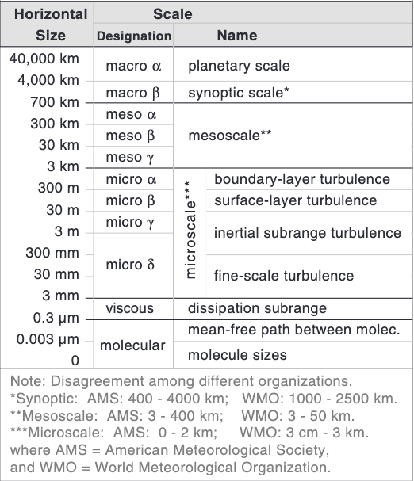
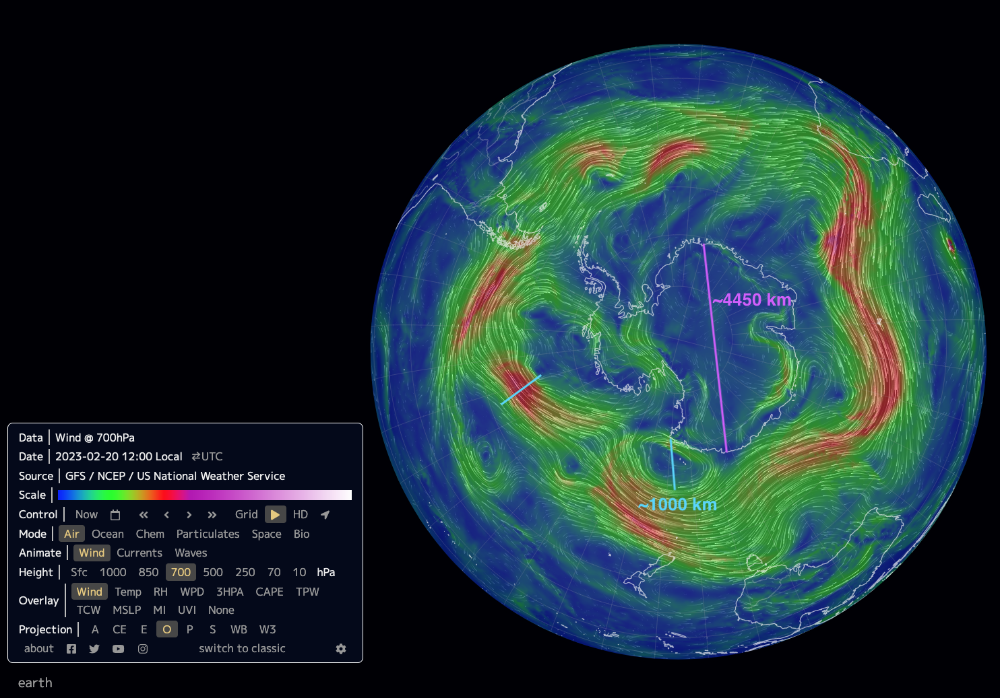

class: center, middle <br/><br/> .title[2 Escalas atmosféricas] .subtitle[Módulo 3: Dinámica de la Atmósfera] <br/><br/> .author[Diplomado en Meteorología y Climatología] .institution[ICAyCC] <br/> .date[6 de marzo de 2024] <br/><br/> <!-- .note[Created with [{Liminal}](https://github.com/jonathanlilly/liminal) using [{Remark.js}](http://remarkjs.com/) + [{Markdown}](https://github.com/adam-p/markdown-here/wiki/Markdown-Cheatsheet) + [{KaTeX}](https://katex.org)] --> --- name: toc class: left <img style="width:50%" src="./figures/ink.jpg"> #Contenido 1. [Escalas atmosféricas](#escalas) 1. [Importancia de la rotación](#rotacion) 1. [Importancia de la estratificación](#estratificacion) <!-- Comment out the next slide if you don't want the Table of Contents link --> --- layout: true .toc[[✧](#toc)] --- class:left <iframe width="700" height="394" src="https://www.youtube.com/embed/h1eRp0EGOmE" title="YouTube video player" frameborder="0" allow="accelerometer; autoplay; clipboard-write; encrypted-media; gyroscope; picture-in-picture; web-share" allowfullscreen></iframe> .caption[[NASA Goddard 2017 Hurricanes and Aerosols Simulation](https://svs.gsfc.nasa.gov/12772). Patrones atmosféricos visibles gracias a partículas pequeñitas transportadas por el viento: humo (blanco), polvo (café) y sal marina (azul). Simulación con asimilación de datos satelitales. Sal -> huracanes 2017; humo-> incendios N-O América en septiembre alcanzan Inglaterra. Polvo del Sahara llega a América, desaparece del centro de los remolinos absorbido por las gotas de agua.] --- name: escalas class:left ## Escalas de movimiento en la atmósfera .left-column[<img style="width:105%" src="./figures/scales_UBCatm113.png"> .caption[En general, los fenómenos atmosféricos caen en esta recta. (UBC ATM 113 - [Stull (2017), Cap. 10](https://www.eoas.ubc.ca/books/Practical_Meteorology/))]] .right-column[ .caption[Clasificación de escalas atmosféricas. [Stull (2017), Cap. 10](https://www.eoas.ubc.ca/books/Practical_Meteorology/)]] --- ### Clasifiquen los siguientes fenómenos por su escala espacio-temporal: Den la escala espacial y temporal correspondiente y ubíquenlo en la gráfica. a) Brisa en la costa b) El Niño-Oscilación del Sur c) Pluma/columna de humo de una chimenea -- <span style="color:grey;font-weight:400;font-size:25px"> a) mesoescala $\beta$ (~10 h, ~10 km), </span> <span style="color:grey;font-weight:400;font-size:25px"> b) escala planetaria $\alpha$ (~10 años, ~10,000 km), </span> <span style="color:grey;font-weight:400;font-size:25px"> c) microescala $\gamma$ (minutos, ~1 m) </span> --- class: left ### Recordando: Características de los fluidos geofísicos (FG) </br></br> * Se encuentran en un sistema de referencia en **rotación**; </br></br> * por lo regular están **estratificados**; </br></br> * En la naturaleza ocurren a "gran escala". --- name: rotacion class: left ## Ejemplo: Efectos de la rotación <iframe width="560" height="315" src="https://www.youtube.com/embed/KiBrKzykwO8?start=116" title="YouTube video player" frameborder="0" allow="accelerometer; autoplay; clipboard-write; encrypted-media; gyroscope; picture-in-picture" allowfullscreen></iframe> .caption[Taylor Columns: DIYnamics Kits Experiments] --- class: left ## Columnas de Taylor Si el flujo no estuviera en un sistema de referencia que rota, esperaríamos que la tinta pasara tanto sobre el obstáculo como alrededor del obstáculo. La rotación genera estructuras verticales en el flujo o "columnas" que siguen líneas de misma profundidad (isóbatas), por lo que la columna de fluido con tinta es forzada a rodear el obstáculo para no cambiar de profundidad (Veremos más al respecto en la clase 3). --- class: left ## La importancia de la rotación Vamos a las notas... --- class: left ## Ejemplo Tomemos 3 minutos para resolver el siguiente ejemplo individualmente: **Un viento que sopla a 10 ms$^{-1}$ en un sistema de baja presión de 1000 km de ancho.** -- $$ \epsilon=\frac{2\pi U}{\Omega L}=\frac{2\pi \; 10^1 \; \textrm{ms}^{-1}}{10^{-4}\; \textrm{s}^{-1} \; 10^6 \; \textrm{m}} \approx 1, $$ por lo tanto, la rotación debe ser considerada en la dinámica del problema. --- name: estratificacion class: left ##Ejemplo: Efectos de la estratificación Demo: Frecuencia de Brunt-Väisälä <iframe width="560" height="315" src="https://www.youtube.com/embed/_DqOyvWwqWI?start=116" title="YouTube video player" frameborder="0" allow="accelerometer; autoplay; clipboard-write; encrypted-media; gyroscope; picture-in-picture" allowfullscreen></iframe> .caption[Video de Fabrizio Croccolo] Demostración en clase. --- ## La frecuencia de estratificación o de Brunt-Väisäla Vamos a las notas... --- ## Importancia de la estratificación Formación de capas bajo gravedad --> Configuración que minimiza energía potencial del sistema Efecto dinámico de la estratificación: Transformación de energía potencial a cinética y viceversa. Cambio en energía potencial por unidad de volumen de parcela de fluido que elevo una altura H: $\Delta \rho g H$. Energía cinética disponible por unidad de volumen: $\frac{1}{2}\rho_0U^2$ Definimos el cociente de las energías: $$\sigma=\frac{1}{2}\frac{\rho_0U^2}{\Delta\rho g H}.$$ --- ## Importancia de la estratificación Definimos el cociente de las energías: $$\sigma=\frac{1}{2}\frac{\rho_0U^2}{\Delta\rho g H}.$$ Si $\sigma\approx1$: Un incremento típico en energía potencial que modifique el flujo consume un pedazo considerable de la energía cinetica disponible --> La estratificación es importante. -- Si $\sigma<<1$: no hay suficiente energía cinética disponible para perturbar la estratificación y ésta limita el flujo --> la estratificación no se puede ignorar. -- Si $\sigma>>1$: modificaciones de energía potencial ocurren a muy bajo costo de energía cinética (es muy fácil mover una parcela de lugar) y la estratificación casi no afecta al flujo --> se puede ignorar. --- class: left ## ¿Qué pasa cuando la rotación y la estratificación son importantes? Esto ocurre cuando $\epsilon \sim 1$ y $\sigma \sim 1$ simultáneamente y obtenemos las siguientes relaciones entre escalas: $$L \sim \frac{U}{\Omega} \; \; \mathrm{ y } \; \; U\sim\sqrt{\frac{\Delta\rho}{\rho_0}gH}.$$ Combinándolas obtenemos una escala de longitud fundamental: $$L\sim\frac{1}{\Omega}\sqrt{\frac{\Delta\rho}{\rho_0}gH}.$$ Para un fluido dado de densidad promedio $\rho_0$ y variaciones de densidad $\Delta\rho$, que ocupa una altura $H$ en un planeta que rota a velocidad $\Omega$ y tiene gravedad $g$, $L$ es la escala de longitud preferencial a la que ocurrirá el movimiento. --- class:left $$L\sim\frac{1}{\Omega}\sqrt{\frac{\Delta\rho}{\rho_0}gH}.$$ En la Tierra ($\Omega=7.29\times10^{-5}$ s$^{-1}$, $g=9.81$ ms$^{-2}$), con condiciones típicas para la atmósfera ($\rho_0=1.2$ kg/m$^3$, $\Delta\rho=0.03$ kg/m$^{3}$, $H=5000$ m) nos dan las siguientes escalas naturales de longutud y velocidad: $$L\_{atmósfera}\sim 500~\mathrm{km, } \; U\_{atmósfera}\sim 30~\mathrm{ms}^{-1}$$ Aunque sean estimaciones *grosso modo*, podemos reconocer la longitud y velocidad típicas de patrones meteorológicos en la atmósfera baja. <span style="color:green;font-weight:400;font-size:25px">Exploremos usando [earth.nullschool](https://earth.nullschool.net/).</span> --- class:left Exploremos usando [earth.nullschool](https://earth.nullschool.net/):  .caption[Imagen de earth.nullschool.org mostrando intensidad del viento alrededor de Antártida a 700 hPa el 20 de febrero de 2023] --- ## Actividades: Si tienes curiosidad de leer más acerca de sistemas de referencia no inerciales: "La increíble historia de la malentendida fuerza de Coriolis" de P. Ripa, FCE. ## Referencias: * Cushman-Roisin y Beckers (2011) Geophysical Fluid Dynamics - Capítulos 1 y 11. * Stull, R., 2017: "Practical Meteorology: An Algebra-based Survey of Atmospheric Science" -version 1.02b. Univ. of British Columbia. 940 pp. (https://www.eoas.ubc.ca/books/Practical_Meteorology/) ---